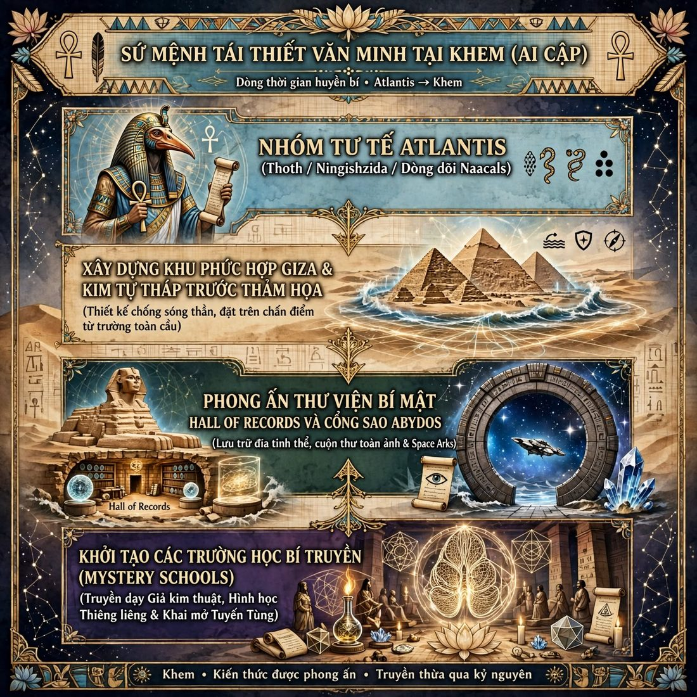
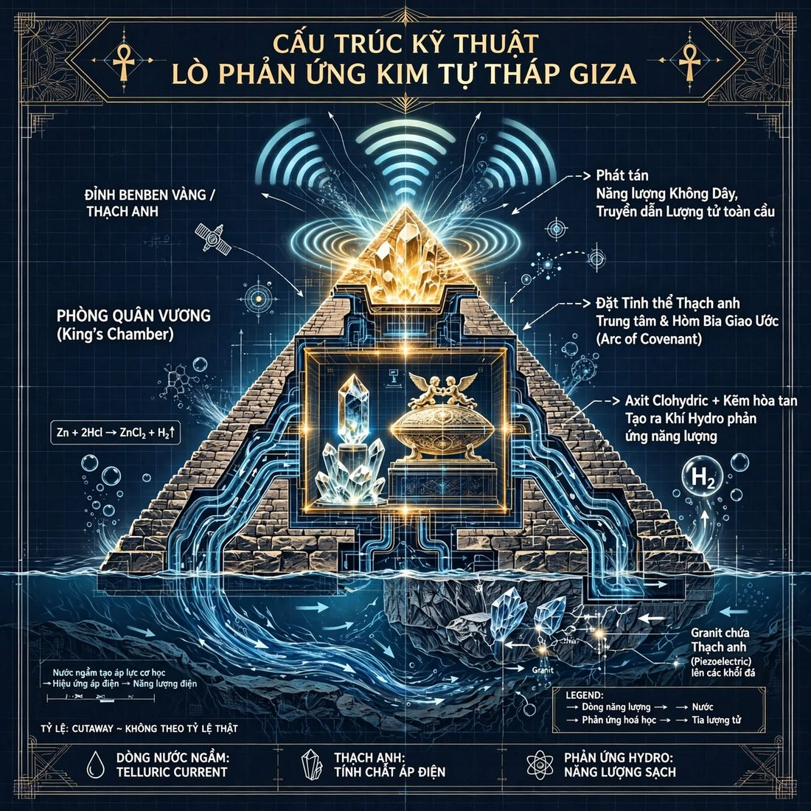
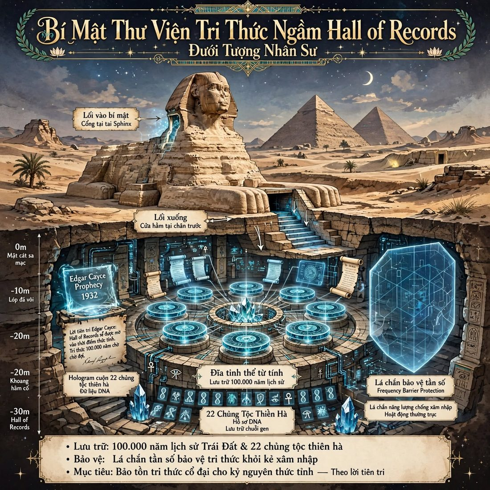
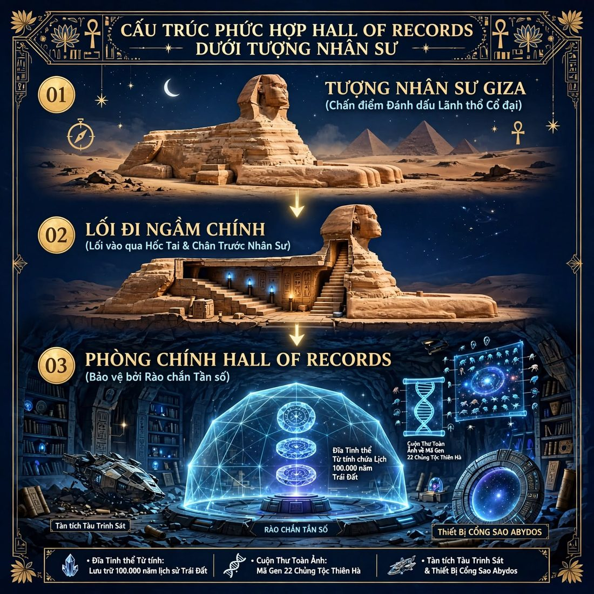
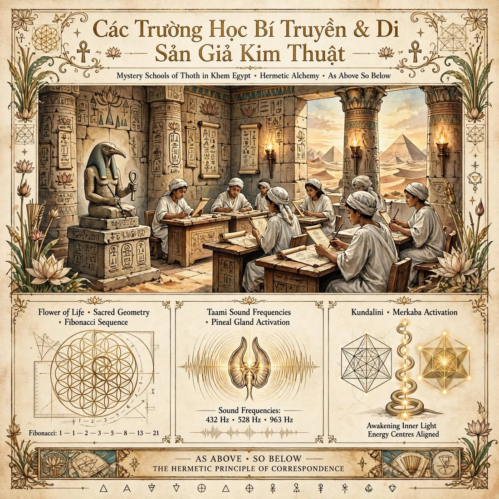
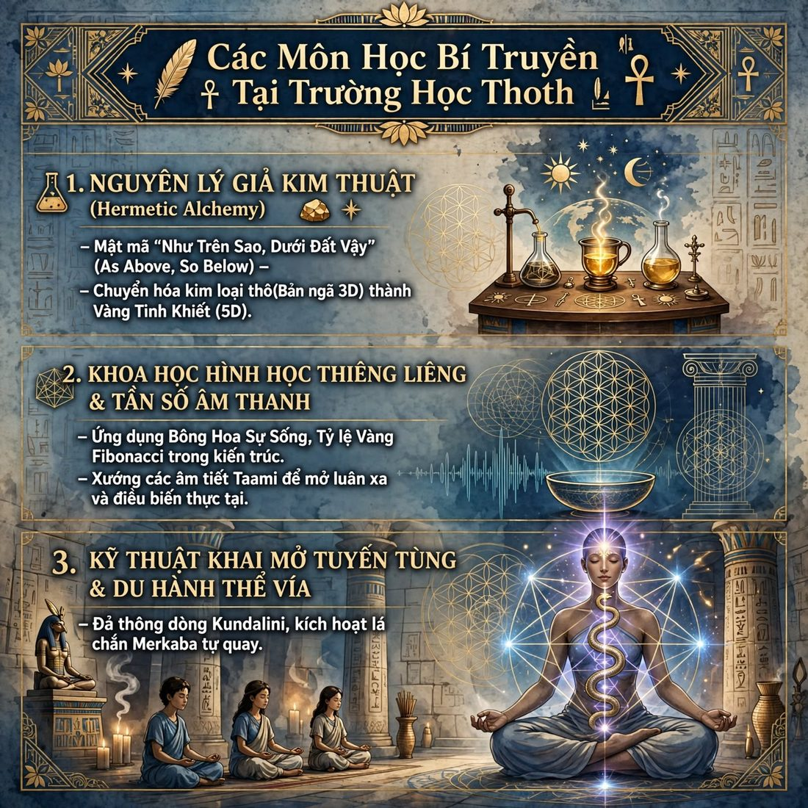
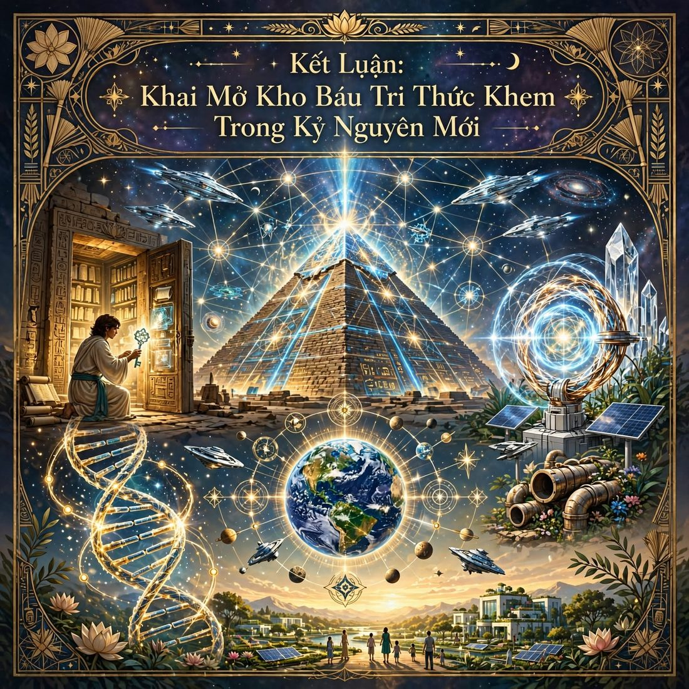

Trang chủ / Chuyên đề 10: Lịch Sử Bị Che Giấu & Nền Văn Minh Cổ Đại / Kỳ 95
Chuyên đề 10 · Kỳ 95 / 100
DI SẢN ATLANTIS TẠI KHEM (AI CẬP CỔ ĐẠI) & MẠNG LƯỚI HALL OF RECORDS

1. Hành Trình Tái Thiết Văn Minh Của Thoth Tại Khem

Sau khi thảm họa Đại Hồng Thủy năm 9.600 TCN nhấn chìm lục địa Atlantis, một nhóm tư tế và nhà khoa học tinh hoa thuộc khối Law of One do Thoth (người Anunnaki được biết đến dưới tên gọi Ningishzida hay Hermes Trismegistus) dẫn dắt đã cập bến vùng đất Khem (tên cổ đại của Ai Cập, mang ý nghĩa "Vùng đất đen trù phú").
Theo các tài liệu giải mật từ Elena Danaan, Michael Salla, Matias De Stefano và bộ Bảng Ngọc Bích (Emerald Tablets), Thoth và các tư tế Atlantis không đến Khem với tư cách là những kẻ chinh phạt, mà là những Người Lưu Giữ Ngọn Đăng Tri Thức (Guardians of Wisdom).
- Khôi phục cấu trúc xã hội: Hướng dẫn các bộ lạc sinh sống dọc sông Nile kỹ thuật nông nghiệp, thiên văn học, y học và ngôn ngữ tượng hình (Hieroglyphs) — vốn là bản giản lược từ ngôn ngữ biểu thanh Taami của Lyra.
- Bảo tồn tri thức lượng tử: Lưu trữ toàn bộ bản thiết kế kỹ thuật Atlantis, công nghệ Năng lượng Điểm Không và lịch sử di truyền 22 chủng tộc thiên hà vào các căn phòng ngầm kiên cố.
2. Bản Chất Thật Sự Của Đại Kim Tự Tháp Giza

Một trong những lời dối trá lịch sử vô lý nhất của ngành khảo cổ học duy vật 3D là việc gán nhãn cho Đại Kim Tự Tháp Giza là "lăng mộ của Pharaoh Khufu". Trong toàn bộ Đại Kim Tự Tháp không hề tìm thấy bất kỳ xác ướp, chữ khắc lăng mộ hay văn bản tôn giáo tang lễ nào.
Dưới góc nhìn của khoa học lượng tử thiên hà (tài liệu Swaruu, Dan Willis và Elena Danaan), Đại Kim Tự Tháp Giza là một Lò Phản Ứng Năng Lượng Lượng Tử Vô Hướng & Nhà Máy Phát Điện Etheric Toàn Cầu.
- Thu hoạch điện lực địa từ (Telluric Energy): Kim Tự Tháp Giza nằm chính xác trên giao điểm từ trường lớn nhất Trái Đất. Dòng nước ngầm chảy xiết dưới lòng kim tự tháp tạo ra ma sát từ tính, kích hoạt hiệu ứng áp điện trên các khối đá Granit chứa hàm lượng thạch anh cao.
- Phản ứng khí Hydro lượng tử: Các đường ống hẹp bên trong kim tự tháp được bơm dung dịch Axit Clohydric nhạt và Kẽm, tạo ra khí Hydro tinh khiết. Khí Hydro đi vào Phòng Quân Vương, hòa quyện với sóng áp điện thạch anh để tạo ra chùm tia năng lượng vô hướng phát qua Đỉnh Benben.
- Phát điện không dây toàn cầu: Năng lượng Phryll phun trào từ đỉnh kim tự tháp đâm thẳng vào tầng điện ly, kết nối với mạng lưới các kim tự tháp toàn cầu (như Teotihuacan tại Mê-hi-cô, Kim tự tháp Trắng tại Xi'an Trung Quốc) để cung cấp điện lượng tử không dây cho toàn bộ phương tiện và đô thị cổ đại.
3. Bí Mật Thư Viện Ngầm Hall of Records Dưới Tượng Nhân Sư


Nằm sâu bên dưới đôi chân trước của Tượng Nhân Sư (Great Sphinx of Giza) ở độ sâu hơn 30 mét là một phức hợp căn phòng ngầm huyền thoại được gọi là Hall of Records (Thư Viện Hồ Sơ Cổ Đại). Theo dự ngôn của nhà ngoại cảm Edgar Cayce và xác nhận từ các nhiệm vụ quân sự giải mật exopolitics:
- Nội dung lưu trữ: Hall of Records chứa đựng các đĩa tinh thể từ tính (Magnetic Crystal Discs) ghi lại toàn bộ lịch sử nguyên thủy của Atlantis, Lemuria, cuộc chiến Anunnaki, bản thiết kế 12 chuỗi DNA và sơ đồ mạng lưới Cổng Sao toàn thiên hà.
- Lớp màng bảo vệ tần số: Căn phòng ngầm không thể bị xâm nhập bởi lòng tham hay vũ lực 3D. Hệ thống bảo vệ tự động của người Altea chỉ mở ra khi nhận được tần số sóng não Gamma và mã DNA tương thích của sinh mệnh có tâm thức thuần khiết.
4. Các Trường Học Bí Truyền & Di Sản Giả Kim Thuật


Để đảm bảo tri thức tối cao không bị rơi vào tay các lực lượng kiểm soát bóng tối nhưng vẫn được truyền thừa qua các thời kỳ tăm tối, Thoth đã thành lập hệ thống Trường Học Bí Truyền (Mystery Schools) tại Khem. Các môn học chính bao gồm:
- Nguyên lý giả kim thuật (Hermetic Alchemy): Mật mã "Như Trên Sao, Dưới Đất Vậy" (As Above, So Below) — chuyển hóa kim loại thô (bản ngã 3D) thành Vàng Tinh Khiết (5D).
- Khoa học hình học thiêng liêng & tần số âm thanh: Ứng dụng Bông Hoa Sự Sống, Tỷ lệ Vàng Fibonacci trong kiến trúc; xướng các âm tiết Taami để mở luân xa và điều biến thực tại.
- Kỹ thuật khai mở Tuyến Tùng & du hành thể vía: Đả thông dòng Kundalini, kích hoạt lá chắn Merkaba tự quay.
Tri thức từ các Trường Học Bí Truyền Ai Cập sau này đã lan tỏa và trở thành hạt giống khởi đầu cho nhiều nền văn minh lớn: từ triết học Hy Lạp cổ đại (Pythagoras, Plato đều từng du học tại Ai Cập), văn hóa Celtic/Druid tại Châu Âu, cho đến các trường phái siêu hình học bí truyền kéo dài tới ngày nay.
5. Kết Luận: Khai Mở Kho Báu Tri Thức Khem

Di sản Atlantis tại Khem không phải là những đống cổ vật câm nín nằm trong bảo tàng, mà là Ngọn Đăng Tri Thức Lượng Tử đang chờ đợi nhân loại hiện đại tái khám phá. Khi chúng ta giải mã được bản chất thật sự của Kim Tự Tháp Giza và khôi phục lại mống di truyền từ Hall of Records, nhân loại sẽ hoàn toàn tháo bỏ chiếc xiềng xích của năng lượng hóa thạch và ma trận tài chính 3D; lấy lại quyền làm chủ đối với sức khỏe, tuổi thọ và các năng lực ngoại cảm tự nhiên; và Trái Đất chính thức nối lại đường dây liên lạc với Cộng đồng Thiên hà Tự do, hoàn thành sứ mệnh tái thiết Kỷ Nguyên Vàng.